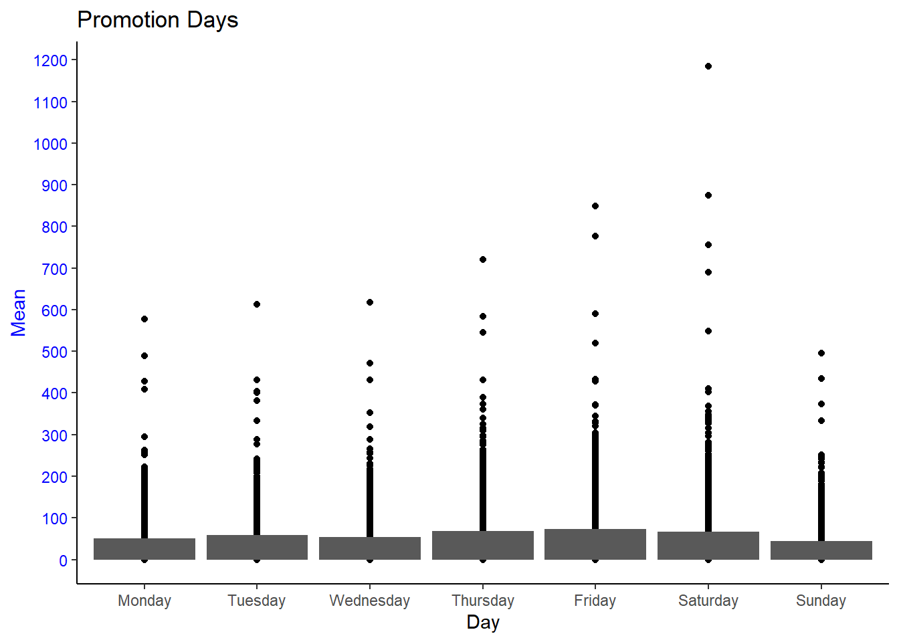
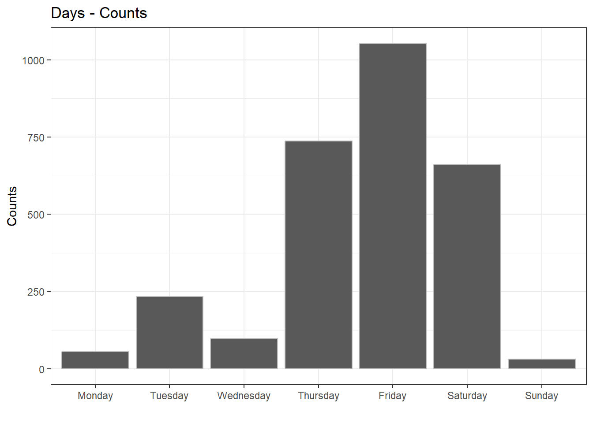

# A tibble: 5 × 22
placekey latitude longitude street_address city region postal_code
<chr> <dbl> <dbl> <chr> <chr> <chr> <dbl>
1 227-222@627-sd6-7dv 41.0 -73.8 250 Main St S… Whit… NY 10601
2 zzw-223@5r8-fqv-xkf 36.1 -96.0 1623 E 15th St Tulsa OK 74120
3 227-222@5z6-96f-btv 33.7 -116. 72333 Highway… Palm… CA 92260
4 222-222@63v-v66-nqz 42.1 -80.1 2204 W 12th St Erie PA 16505
5 224-222@5qw-jn9-3yv 32.9 -97.3 2901 Heritage… Fort… TX 76177
# ℹ 15 more variables: phone_number <dbl>, open_hours <chr>,
# date_range_start <dttm>, date_range_end <dttm>, raw_visit_counts <dbl>,
# raw_visitor_counts <dbl>, visits_by_day <chr>, distance_from_home <dbl>,
# median_dwell <dbl>, bucketed_dwell_times <chr>,
# related_same_day_brand <chr>, related_same_month_brand <chr>,
# popularity_by_hour <chr>, popularity_by_day <chr>, device_type <chr>W12 Task: Chipotle purrr
Resources
Readings
Complete all the interactive purrr primers EXCEPT “Multiple Vectors”.
“Multiple Vectors” is a bit long and goes much deeper than we will go in this class. However, if you are having fun and want to explore, it is an extremely powerful concept to learn.
The “Map Shortcuts” primer could also be skipped if you are short on time. However, the shortcuts are handy and especially if you ever want to read someone else’s code that uses map (for example when you are googling for answers/troubleshooting).
Guided Instruction
These videos provide a demonstration of purrr and hints for setting up and solving the tasks.
Background
You got your dream job working as a data analyst for one of your favorite restaurants, Chipotle! Chipotle is planning to run a large 1 or 2 day promotion. They would like the promotion to take place when the restaurant is busiest. They have gathered restaurant level data that you can use to answer the question, “what is the busiest day in the restaurant?”
This task asks you to conduct the analysis/visualization using two different units of measure. The decision about what unit of measure to use can mask or reveal key insights.
Process
Read in the restaurant level data: https://byuistats.github.io/M335/data/chipotle_reduced.csv
- Here is a data dictionary
Step 2
Create a visualization of the data that can be used to decide what day(s) to run the promotion.
Apply one of the functions from the previous task to each row of the dataset using map_*(). (You may need to do a little cleaning/wrangling first) Use the dataset to create your visualization to support your conclusion (You may need to do a little cleaning/wrangling first) Write about what an “observation” represents in this newly created dataset.

Conclusion
Based on the average and the sum, I´d suggest to have the adds on Saturday follow by Friday.
Step 2
# A tibble: 7 × 2
day count
<fct> <int>
1 Friday 1053
2 Monday 55
3 Saturday 662
4 Sunday 31
5 Thursday 737
6 Tuesday 234
7 Wednesday 98
Conclusions
Based on both charts, I would recommend to run the add on Friday follow by Saturday and Sunday. Both function are slightly different but in both the 3 days are a must.